Prescribing After the Warning Disappeared · vaginal estrogen after the FDA boxed-warning removal
Retrospective cohort study · TriNetX US Collaborative Network · Jan 2023 – Mar 2026
Prescribing After the Warning Disappeared
Henry M. Blair · Arshia Sandozi, MD · Department of Urology, Maimonides Medical Center, Brooklyn, NY
For twenty-two years, low-dose vaginal estrogen carried the same boxed warning as high-dose systemic hormone therapy — a class-wide label applied after the Women's Health Initiative, to a drug that delivers a small fraction of that dose locally. On November 10th, 2025 the FDA announced its intent to remove it; the first revised labels were not approved until February 12th, 2026. That three-month gap between the signal and the act is what makes this testable — and among vaginal products only the ring was relabeled, so the formulations can be asked the same question.
+45.0%
change in slope at Nov 2025
per year, calibrated to the control drugs; 95% CI +1.3 to +107.6, p = 0.043
+48% vs +21%
five-month rise, against the same window a year earlier
no FDA action in the control window
0.77
rate ratio in breast-cancer survivors
the most symptomatic recipients, treated a quarter less
39.8 → 56.4
White–Black gap per 10,000
relative gap unchanged; absolute gap up 42%
Three questions, one query tree. Did prescribing change beyond the trend it was already on, and did it follow the announcement or the label? Did the change reach the women the warning was aimed at? And did it reach everyone? Across the series 362,240 women started vaginal estrogen and 816,693 continued it, and initiation rose from 19.5 to 40.5 per 10,000 women in care. Everything here is a rate per 10,000 women aged 40–90 in active care in the same window, because user counts in a federated network move when organizations join or leave it.
The question
Does removing a boxed warning change prescribing — and does the change concentrate in the patients the warning was deterring? Genitourinary syndrome of menopause affects most postmenopausal women, does not remit on its own, and is chronically undertreated; surveys repeatedly name the boxed warning as a leading reason.
The answer
Prescribing was climbing steeply already, and the announcement — not the label — preceded a further acceleration that survives calibration against unrelated drugs, in both new and continuing use. There was no step change, so what shifted is trajectory and not level. Uptake did not favour the one relabeled formulation. Survivors remain the most symptomatic recipients and the least treated, and the racial gaps are wider in absolute terms than before.
How the study was built
A before-and-after comparison is the easiest study to run and one of the easiest to get wrong. Five design decisions carry this one.
1. A monthly series, not two snapshots
Thirty-nine consecutive months, January 2023 through March 2026 — later months excluded as immature — each with its own numerator and its own denominator. A two-point comparison cannot distinguish a change from a trend that was already running; a series can. The pre-announcement trend here was already +25.8% per year, which is exactly the thing a two-point design would have mistaken for an effect.
2. Windows aligned to the announcement, and a prior-year control for each
Two five-month windows — November 2024–March 2025 and November 2025–March 2026 — plus the tighter January–March pair that avoids the November boundary entirely. Every comparison is run again one year earlier, over months in which nothing regulatory happened, so the question is never “did use rise?” but “did it rise by more than it was already rising?”
3. Incident separated from prevalent
Incident use required a first vaginal-estradiol prescription after a washout with no prior vaginal estrogen of any kind; prevalent use omits the washout. A change in prescribing behaviour should appear first in new decisions, while continuing use moves slowly on refill inertia. Pooling the two attenuates exactly the signal being looked for — and conflating them is one of the documented failure modes of federated-network studies.
4. A denominator that cannot drift
Use is expressed as a rate: women starting vaginal estrogen divided by women aged 40–90 in active care, where active care is established by a diagnosis or outpatient evaluation-and-management code during the same calendar months of the preceding year. Defining the care contact in a prior, non-overlapping period avoids the circularity of a denominator partly constituted by the encounter at which the prescription is written. The same construction is applied to every period and every subgroup.
5. Controls that can falsify the result
A positive control — the systemic estradiol patch, which shared the same announcement but a route for which the systemic-risk extrapolation is not in dispute. Three negative controls — levothyroxine, alendronate and atorvastatin, chronic drugs for overlapping populations of older women, unrelated to the estrogen label. The segmented model is re-fitted against each of the three and their slope changes treated as a null distribution, so the estrogen estimate is reported calibrated rather than raw. That matters here: the controls were not flat.
Why the design is this defensive. Recent methodological reviews of TriNetX-based research document a recurring set of failures: implausible index-event definitions, denominator drift, prevalent–incident conflation, data-lag bias, and reliance on p-values in cohorts so large that everything is significant. Each of the five decisions above answers one of them directly, and the series is truncated at March 2026 as the last mature month before any primary inference is drawn.
Cohort derivation Figure 1
Three abstracts come out of one query tree. The cohort is reached from the network one criterion at a time, and each band below is one of the three: how the trend was measured, how the breast-cancer strata were built, and how the composition of the rise was recovered.
Figure 1. Cohort and query derivation. Every count in the spine is addressed by its query name in the VE master workbook, never typed in — read from the master workbook at build time, and re-read in your browser when this page loads. Dark boxes are cohorts, solid colour marks the query families run against them, and outlined boxes are the quantities each family produces.
Who was in the cohorts Tables 1a–1b
Four cohorts, each at both windows: every woman aged 40–90 in care, every woman who started vaginal estrogen, and the two strata the warning was aimed at — women with a breast-cancer history and women on an aromatase inhibitor.
Characteristic
Women in care, Nov-24
Women in care, Nov-25
New starts, Nov-24
New starts, Nov-25
Patients, n
7,925,664
7,630,951
49,281
68,766
Age, mean ± SD, years
63 ± 14
63 ± 13
64 ± 11
63 ± 12
White, %
70.9
71.2
79.9
79.4
Black or African American, %
13.8
13.5
7.3
7.5
Hispanic or Latino, %
7.9
8.0
6.1
6.8
Menopausal disorder (N95), n (%)
1,263,589 (15.9)
1,243,990 (16.3)
32,657 (66.3)
45,020 (65.5)
GSM / atrophic vaginitis (N95.2), n (%)
323,326 (4.1)
295,889 (3.9)
21,235 (43.1)
25,381 (36.9)
Dyspareunia (N94.1), n (%)
124,575 (1.6)
117,441 (1.5)
4,797 (9.7)
5,625 (8.2)
UTI (N39.0), n (%)
1,458,701 (18.4)
1,366,143 (17.9)
16,937 (34.4)
22,334 (32.5)
Urinary incontinence (N39.4), n (%)
467,906 (5.9)
450,812 (5.9)
10,707 (21.7)
13,308 (19.4)
Genital prolapse (N81), n (%)
314,001 (4.0)
301,550 (4.0)
9,110 (18.5)
11,023 (16.0)
Breast-cancer history (Z85.3), n (%)
438,789 (5.5)
424,276 (5.6)
2,164 (4.4)
3,191 (4.6)
Breast cancer (C50), n (%)
468,571 (5.9)
463,264 (6.1)
2,386 (4.8)
3,691 (5.4)
Osteoporosis (M81), n (%)
1,169,647 (14.8)
1,160,225 (15.2)
9,627 (19.5)
11,947 (17.4)
Hysterectomy (Z90.710), n (%)
720,776 (9.1)
693,391 (9.1)
6,977 (14.2)
9,056 (13.2)
Tamoxifen, n (%)
78,361 (1.0)
78,243 (1.0)
493 (1.0)
860 (1.3)
Anastrozole, n (%)
124,283 (1.6)
120,620 (1.6)
616 (1.2)
958 (1.4)
Prasterone, n (%)
16,738 (0.2)
15,785 (0.2)
437 (0.9)
486 (0.7)
Ospemifene, n (%)
3,653 (0.0)
3,528 (0.0)
145 (0.3)
139 (0.2)
Table 1a. Every woman aged 40–90 in active care, and every woman who started vaginal estrogen, at each five-month window; percentages are of that column’s own n, and race and ethnicity are the recorded shares of each cohort. The two in-care windows are closely matched on age and comorbidity burden, which is what makes the rate comparison interpretable — but the new-start cohort is a less symptomatic group in 2026 than in 2025 (GSM 43.1% → 36.9%, urinary incontinence 21.7% → 19.4%), consistent with the rise reaching beyond the already-coded population. One reconciliation to note: this characteristics query returns 49,281 and 68,766 new starts against distinct-patient denominators of 7,925,664 and 7,630,951, while the cohort query behind the breast-cancer and race analyses returns 34,429 and 50,496 against 5,141,965 and 5,115,347. They are different queries with different washouts, not different answers to the same question, and no rate on this page mixes them.
Characteristic
Breast-cancer hx, Nov-24
Breast-cancer hx, Nov-25
AI users, Nov-24
AI users, Nov-25
Patients, n
1,054
1,612
350
645
Age, mean ± SD, years
69 ± 12
68 ± 12
66 ± 13
63 ± 13
White, %
84.7
85.3
80.3
85.5
Black or African American, %
6.0
6.0
6.9
5.4
Hispanic or Latino, %
3.9
4.2
4.9
3.7
Menopausal disorder (N95), n (%)
774 (73.4)
1,161 (72.0)
210 (60.0)
401 (62.2)
GSM / atrophic vaginitis (N95.2), n (%)
526 (49.9)
727 (45.1)
142 (40.6)
224 (34.7)
Dyspareunia (N94.1), n (%)
124 (11.8)
169 (10.5)
45 (12.9)
77 (11.9)
UTI (N39.0), n (%)
511 (48.5)
780 (48.4)
145 (41.4)
235 (36.4)
Urinary incontinence (N39.4), n (%)
316 (30.0)
404 (25.0)
71 (20.3)
93 (14.4)
Genital prolapse (N81), n (%)
234 (22.2)
302 (18.7)
48 (13.7)
81 (12.5)
Breast-cancer history (Z85.3), n (%)
1,054 (100.0)
1,612 (100.0)
240 (68.6)
388 (60.2)
Breast cancer (C50), n (%)
874 (82.9)
1,340 (83.1)
307 (87.7)
580 (89.9)
Osteoporosis (M81), n (%)
401 (38.0)
571 (35.4)
111 (31.7)
178 (27.6)
Hysterectomy (Z90.710), n (%)
284 (26.9)
390 (24.2)
77 (22.0)
112 (17.3)
Tamoxifen, n (%)
171 (16.2)
282 (17.5)
76 (21.7)
140 (21.7)
Anastrozole, n (%)
255 (24.2)
410 (25.4)
244 (69.7)
414 (64.2)
Prasterone, n (%)
13 (1.2)
20 (1.2)
10 (2.9)
13 (2.0)
Ospemifene, n (%)
<10
10 (0.6)
<10
<10
Table 1b. The two strata the boxed warning was aimed at: women who started vaginal estrogen and carry a breast-cancer history code, and women who started while on an aromatase inhibitor. Percentages are of that column’s own n. Counts between one and ten are masked by TriNetX and shown as <10, which is why several aromatase-inhibitor rows read exactly 10. Both strata are older and more symptomatic than the general new-start cohort, and both roughly doubled in size between the windows (1,054 → 1,612 and 350 → 645).
The monthly trend Figures 2–3 · Table 2
Initiation was already climbing steeply before the announcement — 25.8% a year — which is why the question is about the change in slope and not about whether the line goes up.
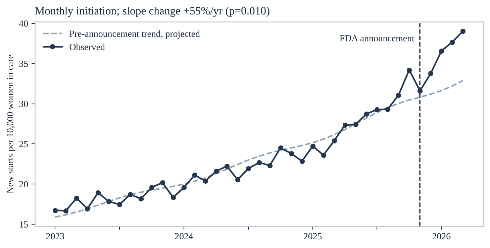
Figure 2. Monthly initiation per 10,000 women aged 40–90 in active care. The dashed line is the pre-announcement model — trend plus one Fourier harmonic for seasonality — carried forward; the vertical line marks November 2025. Incident use rose from 19.5 to 40.5 per 10,000 across the series.
Segmented model
Estimate
95% CI
p
Pre-announcement trend, incident use
+25.8%/yr
+23.1 to +28.6
<0.001
Level shift at Nov 2025
+0.5%
—
0.92
Change in slope at Nov 2025
+54.5%/yr
—
0.010
Change in slope, calibrated to the control drugs
+45.0%/yr
+1.3 to +107.6
0.043
Continuing use, change in slope (calibrated)
+37.6%/yr
+4.5 to +81.3
0.023
Placebo break at September 2025
no slope change
—
0.13
Placebo break at January 2026
no slope change
—
0.60
Table 2. Weighted least squares on log(rate) with numerator weights, a level shift and a slope change at November 2025, and a twelve-month sine–cosine pair — algebraically the quasi-Poisson segmented model, and the same estimator implemented on sheet 2 of the workbook. Estimates are back-transformed to percent change per year. What moved was the slope, not the level: there is no step at November 2025, there is a hinge — and re-fitting the break at months with no FDA action produces nothing.
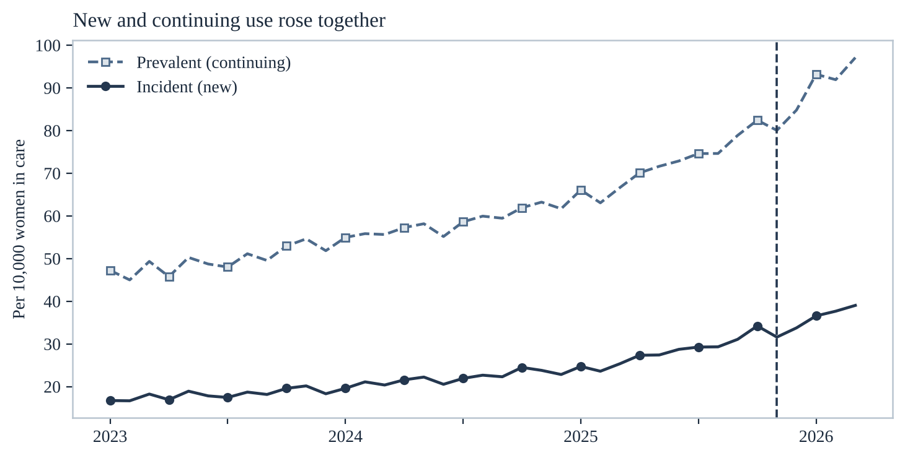
Figure 3. New and continuing use on one scale. Both rose, and the calibrated slope change is significant in both — which matters, because an artifact of how new starts are defined would not move continuing use as well.
The primary comparison Figure 4 · Table 3
The same comparison run three ways, each with the prior-year control sitting beside it. The control is the whole argument: use rose 21% between January–March 2024 and January–March 2025, when nothing happened, and 54% in the equivalent window around the announcement.
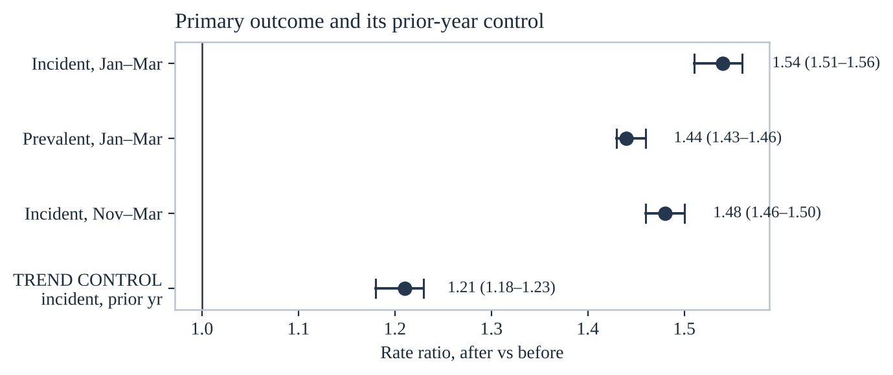
Figure 4. Rate ratios after versus before, with 95% Katz confidence intervals. The bottom row is the prior-year control: the same comparison shifted back twelve months, over a period containing no FDA action.
Comparison
Before: n / N
After: n / N
Rate ratio (95% CI)
Incident use, Jan–Mar 2026 vs Jan–Mar 2025
19,703 / 8,013,299
29,433 / 7,790,510
1.54 (1.51–1.56)
Incident use, Nov 2025–Mar 2026 vs Nov 2024–Mar 2025
31,783 / 13,190,276
46,707 / 13,075,508
1.48 (1.46–1.50)
Prevalent use, Jan–Mar 2026 vs Jan–Mar 2025
56,839 / 8,704,989
81,476 / 8,656,188
1.44 (1.43–1.46)
Trend control — incident, Jan–Mar 2025 vs Jan–Mar 2024
15,761 / 7,741,035
19,703 / 8,013,299
1.21 (1.18–1.23)
Table 3. N is women in care in the window; n is women starting (or, for the prevalent row, continuing) vaginal estrogen. Rate ratios are Katz with 95% confidence intervals. Read the last row first. A 54% rise against a background that was already producing 21% is the quantity of interest, and the two intervals do not overlap.
Control drugs Figure 5 · Table 4
The standing objection to any before-and-after study is that something else changed. Here the something-else is measured directly — and it is the reason the headline estimate is reported calibrated rather than raw.
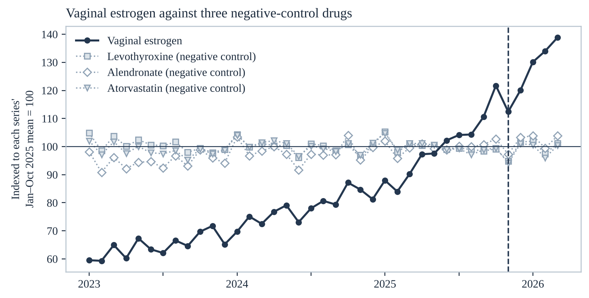
Figure 5. Vaginal estrogen against three negative-control drugs, each series indexed to its own January–October 2025 mean so that the four can share a scale.
Drug
Role
Before: n / N
After: n / N
Rate ratio (95% CI)
Systemic estradiol patch
Positive control
1,376 / 8,013,299
2,638 / 7,790,510
1.97 (1.85–2.10)
Vaginal estrogen (continuing)
Exposure
56,839 / 8,704,989
81,476 / 8,656,188
1.44 (1.43–1.46)
Alendronate
Negative control
45,108 / 8,704,989
46,320 / 8,656,188
1.03 (1.02–1.05)
Levothyroxine
Negative control
343,071 / 8,704,989
336,889 / 8,656,188
0.99 (0.98–0.99)
Atorvastatin
Negative control
330,219 / 8,704,989
320,153 / 8,656,188
0.97 (0.97–0.98)
Table 4. January–March 2025 versus January–March 2026, shared denominator. Across the windows the three unrelated chronic drugs moved by three per cent or less in either direction.
The controls accelerated too, and that is why the estimate is calibrated. The window ratios above make the negative controls look flat, but the segmented model fitted to each of them shows all three picking up speed over the same months. Treating the three slope changes as a null distribution and subtracting their mean brings the vaginal estrogen estimate down from +54.5%/yr to +45.0%/yr and widens the interval to +1.3 to +107.6 (p = 0.043) — still significant, but materially smaller than the raw figure. The calibrated number is the one this page reports as the result.
The positive control needs the same care. The systemic estradiol patch rose by a larger window ratio than vaginal estrogen (1.97 against 1.54), which read alone would say the announcement moved systemic therapy more. The time series says otherwise: the patch entered the window already climbing at about 40% a year and did not measurably depart from that trajectory, while vaginal estrogen entered on a shallower trend and added to it. A pre-post ratio in a rising series is not an effect, and the two drugs separate only once both are modelled.
Break-month sensitivity Figure 6
November 2025 was pre-specified as the break. It is worth showing what happens if it is wrong.
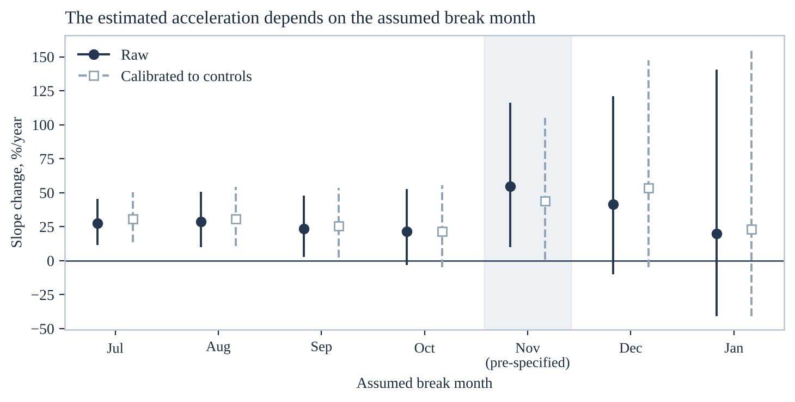
Figure 6. The segmented model re-fitted at each of seven assumed break months, raw and calibrated to the controls. The pre-specified month is shaded.
The estimate is largest at the pre-specified month and shrinks on either side of it. Re-fitting the break at months with no FDA action produces no slope change at all — September 2025 gives p = 0.13 and January 2026 p = 0.60 — which is the pattern a real event produces and a drifting trend does not. It is also the honest read that the intervals widen sharply once the break is placed late in the series, because fewer post-break months remain to estimate a slope from. The sign is robust; the magnitude is not precisely identified, and five post-announcement months is a short series on which to rest it.
Breast cancer Figures 7–8 · Table 5
The boxed warning named breast cancer among its harms, and it is read as contraindicating the drug after breast cancer. If caution tracked tumour biology, receptor-positive survivors would be treated least of all. The data say something simpler and worse.
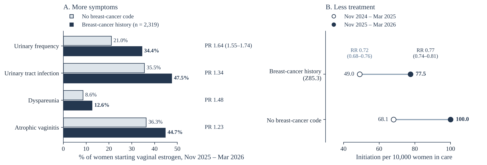
Figure 7. Overburdened and undertreated. A. Recorded genitourinary diagnoses among women who started vaginal estrogen in the post-announcement window, survivors against women with no breast-cancer code. B. The initiation rates in the same two groups, before and after.
Among women starting vaginal estrogen, Nov 2025–Mar 2026
Breast-cancer history n = 2,319
No breast-cancer code
Prevalence ratio
Urinary frequency
34.4%
21.0%
1.64 (1.55–1.74)
Urinary tract infection
47.5%
35.5%
1.34
Dyspareunia
12.6%
8.6%
1.48
Atrophic vaginitis
44.7%
36.3%
1.23
Initiation per 10,000 women in care
Nov 2024–Mar 2025
Nov 2025–Mar 2026
RR vs no breast cancer, before
RR, after
Breast-cancer history (Z85.3)
49.0
77.5
0.72 (0.68–0.76)
0.77 (0.74–0.81)
No breast-cancer code
68.1
100.0
reference
reference
History or active disease (Z85.3 or C50)
52.2
85.4
0.76
0.85
Neither history nor active
68.3
99.9
reference
reference
Continuing use, breast-cancer history
—
—
0.69
Table 5. Prevalence ratios in the upper table compare recorded diagnoses among women who started the drug; rate ratios in the lower table compare initiation within each stratum against the matched comparison group in the same window. Survivors who receive vaginal estrogen are more symptomatic than other recipients, and as a group receive it about a quarter less often. Uptake rose faster in survivors after the announcement — 0.72 to 0.77, and 0.76 to 0.85 on the broader definition — narrowing the gap without closing it.
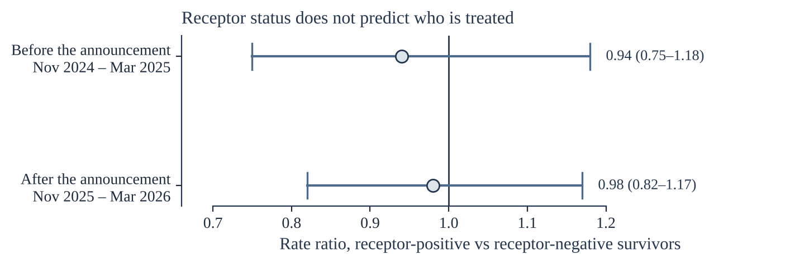
Figure 8. Receptor-positive against receptor-negative survivors, before and after. Both intervals cross 1.
The shortfall is no smaller where the theoretical concern does not apply. Receptor-positive and receptor-negative survivors initiated at indistinguishable rates in both windows — 0.94 (0.75–1.18) before and 0.98 (0.82–1.17) after. If the caution were about estrogen feeding a hormone-responsive tumour, receptor-negative women should look like women without breast cancer. They do not. The undertreatment reads as blanket caution about the diagnosis rather than individualised risk, and it persisted after the announcement.
Who starts Figure 9 · Table 6
Before asking who was missed, it is worth checking that the prescribing is reaching symptomatic women at all.
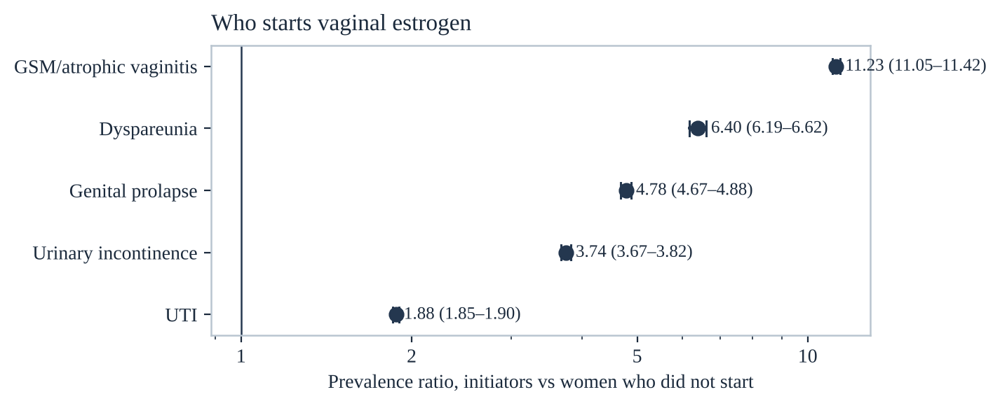
Figure 9. Genitourinary diagnoses among women who started vaginal estrogen, against women in care who did not. Log scale.
Diagnosis
Did not start
Started
Prevalence ratio (95% CI)
GSM / atrophic vaginitis (N95.2)
3.8%
43.1%
11.23 (11.05–11.42)
Dyspareunia (N94.1)
1.5%
9.7%
6.40 (6.19–6.62)
Genital prolapse (N81)
3.9%
18.5%
4.78 (4.67–4.88)
Urinary incontinence (N39.4)
5.8%
21.7%
3.74 (3.67–3.82)
Urinary tract infection (N39.0)
18.3%
34.4%
1.88 (1.85–1.90)
Table 6. November 2025–March 2026 window; initiator n = 49,281. The non-initiator arm is a scaled sample (sampling factor 0.0753) rather than the full denominator, which affects the width of the confidence interval and not the ratio. Women who start are enriched eleven-fold for a GSM diagnosis, so the prescribing is reaching symptomatic women rather than being scattered — which is what makes the shortfall in survivors a shortfall rather than a difference in indication.
Race and ethnicity Figure 10 · Table 7
A rise in prescribing is not the same as a rise in access. If the increase lands where use was already highest, the absolute distance between groups grows even when the relative distance does not — and which of the two is reported decides whether the same event is described as equitable or as regressive.
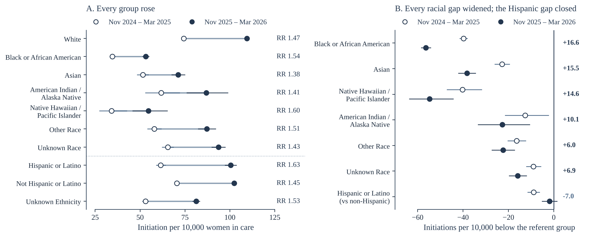
Figure 10.A. Initiation per 10,000 women in care, before and after, with 95% Wilson intervals and the within-group rate ratio. B. The same data as absolute differences from the referent group, with 95% Newcombe intervals; the figure at the right of each row is the change in the size of that gap.
Group
Nov 2024–Mar 2025 per 10,000
Nov 2025–Mar 2026 per 10,000
Rate ratio vs White, before
… after
Absolute gap, before → after
White
74.3
109.5
reference
reference
—
Black or African American
34.6
53.2
0.46 (0.45–0.48)
0.49 (0.47–0.50)
39.8 → 56.4
Native Hawaiian / Pacific Islander
34.1
54.7
0.46
0.50
40.2 → 54.8
Asian
51.5
71.2
0.69
0.65
22.8 → 38.3
American Indian / Alaska Native
61.8
86.8
0.83
0.79
12.6 → 22.7
Hispanic or Latino (vs non-Hispanic)
61.5
100.4
0.87
0.98
8.9 → 1.9
Table 7. Initiation per 10,000 women in care in each five-month window. Race and ethnicity are the recorded demographic distribution of each cohort applied to its patient count. Rate ratios are Katz against White women, and against non-Hispanic women for the Hispanic row; absolute gaps are differences per 10,000 from the same referent.
Relative disparity barely moved; absolute disparity widened for every racial group. Black women initiated at less than half the White rate before the announcement (0.46) and at less than half after it (0.49). Over the same months the distance between the two groups grew from 39.8 to 56.4 per 10,000 women in care — a 42% increase — and the intervals on those two differences do not overlap. The mechanism is arithmetic and requires no differential response: a proportional rise applied to a higher baseline adds more women. Black women in fact rose slightly faster in proportional terms than White women and still lost ground.
Ethnicity is the exception, and it shows what closing a gap actually requires. Hispanic women rose from 61.5 to 100.4 per 10,000 against 70.5 to 102.4 in non-Hispanic women — a differential large enough to overcome the baseline arithmetic. The gap fell from 8.9 to 1.9 per 10,000, the only comparison in the study whose post-announcement difference includes zero. Whatever drove the response among Hispanic women was not what drove it among Black women, and the two should not be described together.
Formulation Figure 11 · Table 8
This is the natural experiment inside the natural experiment. Among vaginal products only the estradiol ring had been relabeled; the inserts and creams kept their original labeling. If prescribers were responding to the label, ring use should have risen relative to the rest.
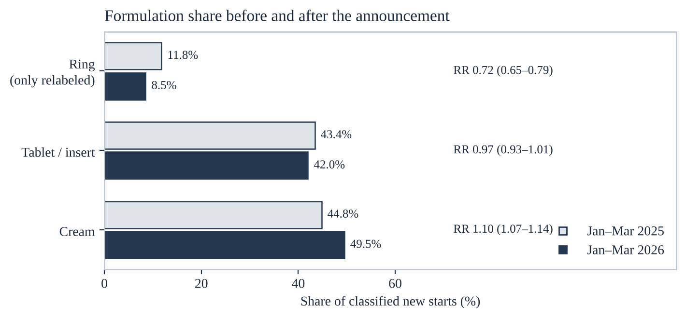
Figure 11. Share of classified new starts by formulation, with Katz rate ratios. The ring, the only relabeled vaginal product, is the one that lost share.
Formulation
Jan–Mar 2025
Jan–Mar 2026
Share ratio (95% CI)
Absolute growth
Ring — the only relabeled product
711 (11.8%)
710 (8.5%)
0.72 (0.65–0.79)
+0%
Tablet / insert
2,625 (43.4%)
3,530 (42.0%)
0.97 (0.93–1.01)
+34%
Cream
2,712 (44.8%)
4,161 (49.5%)
1.10 (1.07–1.14)
+53%
All classified starts
6,048 (100%)
8,401 (100%)
—
—
All new starts
19,703
29,433
1.54 (1.51–1.56)
+49%
Unclassified starts
13,655 (69.3% of all)
21,032 (71.5% of all)
1.03 (1.02–1.04)
+54%
Table 8. Percentages in the first two columns are of classified starts; the unclassified row is a percentage of all new starts. Only 30.7% of 2025 starts and 28.5% of 2026 starts carry a formulation in the prescription record, which is the main limitation of this analysis. The announcement, not the label. Every formulation grew in absolute terms, but the ring — the one product whose own label changed — was flat (711 → 710) and lost a third of its share, while cream, never relabeled, gained. Uptake did not favour the relabeled formulation.
Continuation Figure 12 · Table 9
If the rise were only people refilling what they already had, the ratio of continuing users to new users would climb. It fell.
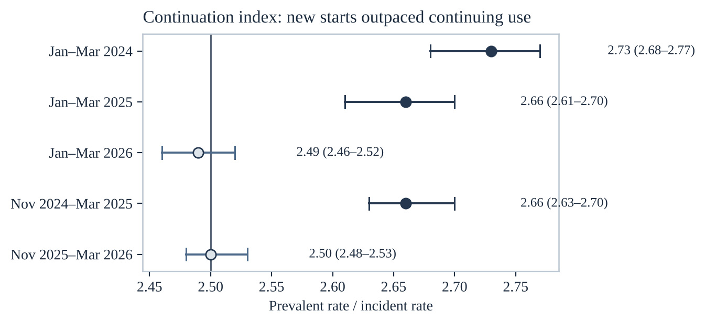
Figure 12. The continuation index — prevalent rate divided by incident rate — across five windows. A falling index means new starts are outpacing continuing use.
Window
Incident
Prevalent
Continuation index (95% CI)
Jan–Mar 2024
15,761 / 7,741,035
46,107 / 8,310,169
2.73 (2.68–2.77)
Jan–Mar 2025
19,703 / 8,013,299
56,839 / 8,704,989
2.66 (2.61–2.70)
Jan–Mar 2026
29,433 / 7,790,510
81,476 / 8,656,188
2.49 (2.46–2.52)
Nov 2024–Mar 2025
31,783 / 13,190,276
92,204 / 14,367,109
2.66 (2.63–2.70)
Nov 2025–Mar 2026
46,707 / 13,075,508
129,888 / 14,528,317
2.50 (2.48–2.53)
Table 9. The index fell by 6.2% between the January–March windows either side of the announcement (ratio 0.938, 95% CI 0.919–0.958) against 2.5% in the prior-year control (0.975, 0.951–0.998), and by 6.0% between the five-month windows (0.940, 0.924–0.955). Continuing use did rise — 1.41 (1.39–1.43) in the January–March comparison, against a prior-year control of 1.17 (1.15–1.19) — but new starts rose faster, so the cohort tilted toward people who had not been taking it before. That is what a label effect looks like, and it is not what a refill artifact looks like.
Open threads
What is on this page is what the workbook and the three abstracts support. These are the pieces still outstanding, named rather than estimated.
The deterrence gradient needs its own queries. The companion manuscript reports initiation ordering monotonically with prior reason for deterrence — unstratified 1.47, breast-cancer history 1.56, history or active disease 1.62, any aromatase inhibitor 1.91, incident disease 1.94 — but the aromatase-inhibitor row is currently built on women without a history code, which excludes most aromatase-inhibitor users. Four queries fix it. The ordering is not reported here until they are run.
Receptor status is coded for a minority. Status codes of either polarity are present for roughly 37% of breast-cancer patients in the network, and coded ER-positive disease accounts for 29% of the cohort against a national estimate near 65%. The strata in Figure 8 are therefore a non-representative slice, and the drug-augmented definition that recovers part of what the codes miss has its own circularity, since aromatase inhibitors cause the symptom the drug treats.
The formulation window needs reconciling. The January–March and November–March versions of the ring comparison give 11.8 → 8.5% and 12.0 → 8.0%. Table 8 reports the January–March pair; the two should be stated consistently before publication.
The geographic placebo test. The FDA action applies only to the United States, so a regulatory effect should concentrate in U.S. organisations and attenuate elsewhere. Not yet run.
Regional variation and receptor status by race. Both are available through the platform's cohort explorer without new query families, and both are checks of the network against external estimates rather than new claims.
Limitations
It is still a before-and-after study. The controls constrain network-level drift, but they cannot exclude a confounder specific to menopause care — a guideline, a society statement, a media cycle — concentrated in the same months. They establish that whatever moved vaginal estrogen did not move levothyroxine, alendronate or atorvastatin, which is narrower than causality and broader than nothing.
The pre-trend is steep and the controls were not flat. Initiation was rising 25.8% a year before November 2025, and the control drugs accelerated over the same months, which is why the headline estimate is the calibrated +45.0%/yr rather than the raw +54.5%/yr.
Five post-announcement months. The post-period slope rests on five points and its interval is correspondingly wide. The break-month sweep shows the sign is stable and the magnitude is not precisely identified; the estimate should be revisited as the series matures.
Most starts carry no formulation. Seven in ten prescription records do not identify ring, tablet or cream, so the formulation analysis rests on under a third of the cohort.
Race and ethnicity are reconstructed. Group counts are the recorded demographic distribution of each cohort applied to its patient count, not direct per-group queries, and the recording itself varies between contributing organisations and is frequently not self-reported.
The denominator conditions on access. Everyone counted here is already in care, so women entirely outside care are absent from both numerator and denominator. These data cannot separate under-diagnosis from under-treatment, and they understate disparity relative to a general-population denominator.
Small cells are masked. TriNetX returns counts of one to ten as ten, which constrains the formulation and endocrine-therapy subseries more than the primary series.
Orders are not doses. Electronic-health-record orders capture prescribing intent, not dispensing or adherence, and the gap between the two is known to be substantial for this drug class.
What comes next
The four aromatase-inhibitor queries in Open threads are the immediate work: they are what turns “prescribing rose” into “the warning was doing the deterring,” and an ordering across cohorts is a harder thing to produce by accident than a single difference.
Beyond them: extending the series past March 2026 to confirm the new slope persists rather than reflecting a one-time release of pent-up demand; the geographic placebo test; and linking prescribing to downstream outcomes — symptom relief, urinary-tract-infection rates, and oncologic safety in the breast-cancer subgroup, where the entire clinical argument for lifting the warning rests on a safety claim this dataset can begin to test.
References
#
Reference
1
The Women's Health Initiative Investigators. Risks and benefits of estrogen plus progestin in healthy postmenopausal women.JAMA. 2002;288(3):321–333.
2
Portman DJ, Gass MLS; Vulvovaginal Atrophy Terminology Consensus Conference Panel. Genitourinary syndrome of menopause: new terminology.Maturitas. 2014;79(3):349–354.
3
Rahn DD, Carberry C, Sanses TV, et al. Vaginal estrogen for genitourinary syndrome of menopause: a systematic review.Obstet Gynecol. 2014;124(6):1147–1156.
4
Faubion SS, Larkin LC, Stuenkel CA, et al. Management of genitourinary syndrome of menopause in women with or at high risk for breast cancer.Menopause. 2018;25(6):596–608.
5
Crandall CJ, Hovey KM, Andrews CA, et al. Breast cancer, endometrial cancer, and cardiovascular events in participants who used vaginal estrogen in the Women's Health Initiative Observational Study.Menopause. 2018;25(1):11–20.
6
Constantine GD, Graham S, Lapane K, et al. Endometrial safety of low-dose vaginal estrogens in menopausal women: a systematic review.Menopause. 2019;26(7):800–807.
7
The North American Menopause Society. The 2020 genitourinary syndrome of menopause position statement.Menopause. 2020;27(9):976–992.
8
Manson JE, Kaunitz AM. Menopause management — getting clinical care back on track.N Engl J Med. 2016;374(9):803–806.
9
Palacios S, Combalia J, Emsellem C, et al. Therapies for the management of genitourinary syndrome of menopause.Post Reprod Health. 2020;26(1):32–42.
10
U.S. Food and Drug Administration. Removal of boxed warning for low-dose vaginal estrogen products.FDA Drug Safety Communication; November 11th, 2025.
11
Zeeshan FNU, Saqlain A. FDA's 2025 removal of black box warnings on menopausal hormone therapy.Ann Med Surg (Lond). 2025. 10.1097/MS9.0000000000004749
12
TriNetX LLC. TriNetX US Collaborative Network: methodology and data provenance.Cambridge, MA; 2026.
13
Ludwig RJ, Anson M, Zirpel H, et al. A comprehensive review of methodologies and application to use the real-world data and analytics platform TriNetX.Front Pharmacol. 2025;16:1516126. 10.3389/fphar.2025.1516126
14
Nassar M, Abosheaishaa H, Elfert K, et al. TriNetX and real-world evidence: a critical review of its strengths, limitations, and bias considerations in clinical research.ASIDE Intern Med. 2025. 10.71079/aside.im.03222516
15
Joelving F. Medical students are using a popular research tool to pump out misleading studies.Science (ScienceInsider). June 24th, 2026;392(6805).
16
Wang J, Tsai KW, Lu CL, Lu KC. Analyzing clinical laboratory data outcomes in retrospective cohort studies using TriNetX.Biochem Med (Zagreb). 2025;35(3):030502. 10.11613/BM.2025.030502
17
Liu et al. On the reported methodology in published TriNetX-based studies: an analysis of impossible index event designs.Eur J Epidemiol. 2025. 10.1007/s10654-025-01342-6
18
Williford SE, Chan KA, Brown JS. Re: On the reported methodology in published TriNetX-based studies (correspondence).Eur J Epidemiol. 2026. 10.1007/s10654-026-01374-6
19
Suckling J, Lethaby A, Kennedy R. Local oestrogen for vaginal atrophy in postmenopausal women.Cochrane Database Syst Rev. 2006;(4):CD001500.
20
Hsieh M-C, Lu M-C, Koo M. Mapping TriNetX-based real-world evidence publications by clinical domain and study purpose, 2018–2025: a bibliometric analysis.Healthcare (Basel). 2026;14(14):2143. 10.3390/healthcare14142143
About the study
Data source. TriNetX US Collaborative Network — a federated platform returning aggregate counts from de-identified electronic health records at participating U.S. health-care organizations. The queries behind this page were run against a snapshot of 75 organizations and 42,417,840 patients; no patient-level records leave their source, and counts of one to ten are returned as ten. The study was approved by the institutional review boards of Maimonides Medical Center and SUNY Downstate Health Sciences University.
Series and windows. Thirty-nine monthly cohorts of women aged 40–90 in active care, January 2023 through March 2026, with later months excluded as immature. Comparison windows: January–March 2025 versus January–March 2026, and November 2024–March 2025 versus November 2025–March 2026, each with the equivalent prior-year pair as a trend control. Active care is established by a diagnosis or outpatient evaluation-and-management code in the same calendar months of the preceding year.
Analysis. Wilson score intervals for proportions, Katz intervals for rate ratios, Newcombe for absolute differences. The trend model is weighted least squares on log(rate) with numerator weights, a level shift and a slope change at November 2025, and a twelve-month harmonic pair — algebraically the quasi-Poisson segmented model, implemented identically in the workbook and in the figure generator so the two report the same coefficients. The three negative-control slope changes are treated as a null distribution and their mean subtracted, so the headline estimate is calibrated rather than raw.
Provenance. Every count, percentage, confidence interval and rate ratio on this page is read from a computed cell of the master workbook or from the submitted abstracts — the same cells the figure generator reads — and nothing is recalculated here, except rates per 10,000 formed by dividing a printed numerator by its printed denominator. Where a comparison is not yet computed, it is listed in Open threads rather than estimated.
Authors. Henry M. Blair; Arshia Sandozi, MD. Departments of Urology, Maimonides Medical Center and SUNY Downstate Health Sciences University, Brooklyn, NY.
The manuscripts
This work is three papers — the trend and the announcement, breast cancer and receptor status, and race and ethnicity. Everything they rest on is on this page. The manuscripts themselves sit behind a passphrase while the work is unpublished; if I sent you one, it opens there. Otherwise email me.
Figures produced by make_figures.py, ms_figures.py and ve_derivation.py from the VE data master workbook · counts as-queried, never rescaled.